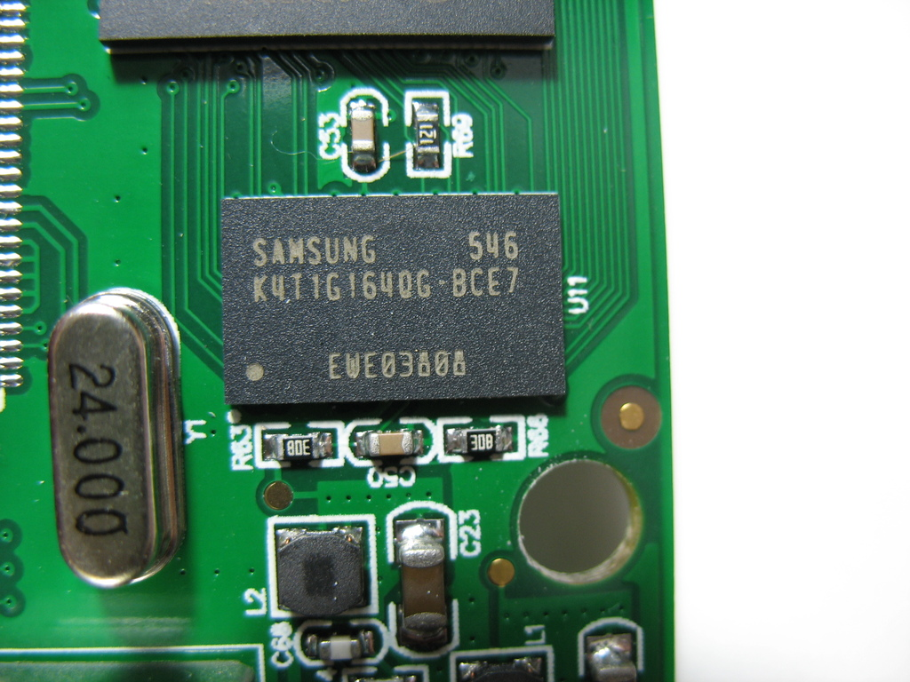
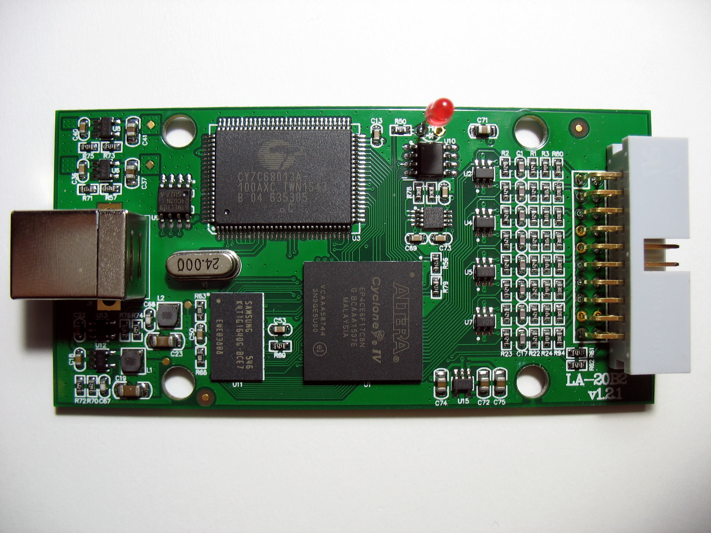
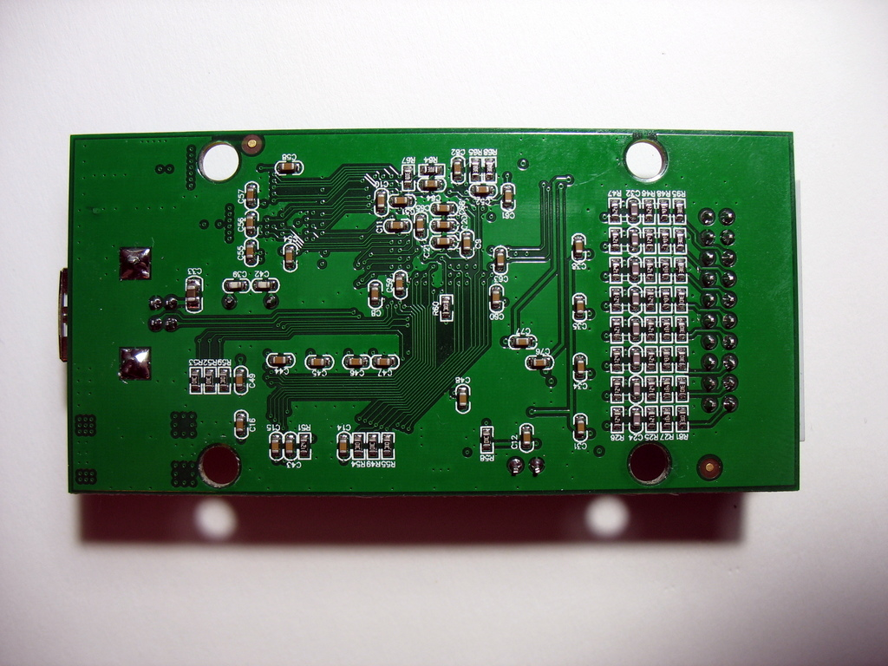
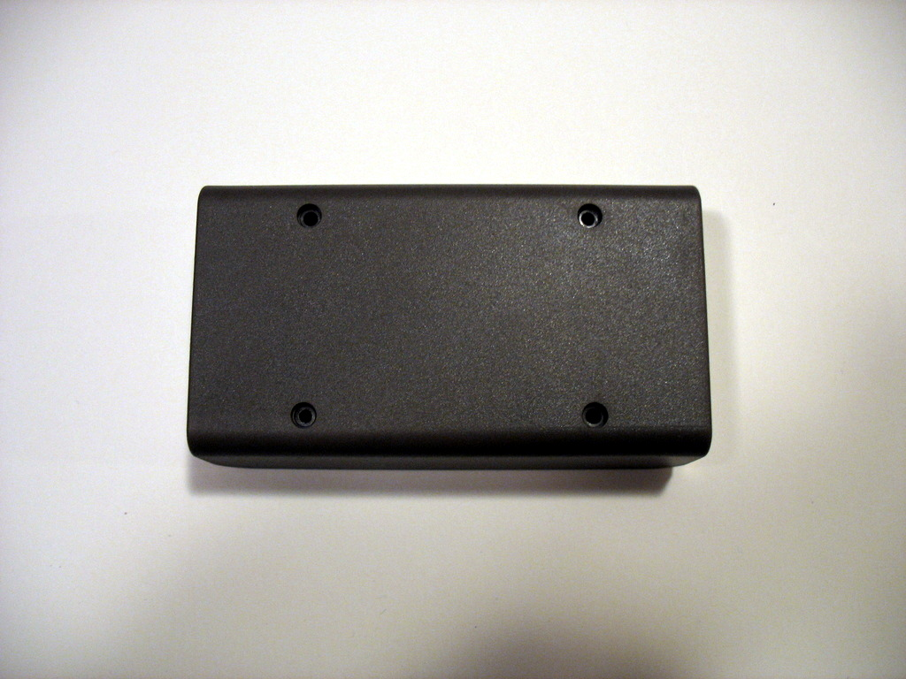

Kingst LA2016¶
Kingst LA2016¶
| Status | supported |
| Source code | kingst-la2016 |
| Channels | 16 |
| Samplerate | 200MHz max. |
| Samplerate (state) | State analysis not supported |
| Triggers | Level (multiple channels)Edge (one channel) |
| Min/max voltage | -50V — 50V |
| Threshold voltage | Configurable:-4V—4V, min step 0.01V |
| Memory | 128MByte DDR2 SDRAM40M—10G samples |
| Compression | Yes |
| Website | qdkingst.com |
The Kingst LA2016 is a USB-based, 16-channel logic analyser with 200MHz maximum samplerate and 128MiB sample memory. It is part of the Kingst LA Series and is supported by the kingst-la2016 sigrok driver.
The current vendor is "Qingdao Kingst Electronics Co., Ltd." but older models are branded "Jiankun" rather than "Kingst". Detailed specifications and the vendor software are available on the Kingst website.
TODO Move common items to the series' page. Make device pages specific to devices, avoid redundancy.
- Support Status: It is recommended to use recent software (at least mid November 2021, better February 2022), issues with LA2016 and LA1016 got addressed, and support for other devices has improved.
- 2021-11-19 Open firmware for the FX2 MCU is available for testing. FPGA bitstreams extraction from vendor software still is required. Behaviour of the vendor's and the open source MCU firmware shall be the same.
- Known Issues: PulseView allows the user to setup multiple edge triggers, but the analyser only supports one. Please only use one edge trigger to avoid undefined behaviour. Note the edge trigger can be combined with any number of level triggers. (gsi: Is this worth mentioning here? It's well understood that software use is contrained by hardware capabilities, all supported devices have constraints.)
- The device supports an input threshold range of -4.0V to +4.0V, but the sigrok driver currently implements a limited set of discrete values. Which covers all popular logic families (0.8V to 5.0V), but omits zero crossing as well as negative values. Which should not be too limiting a constraint.
- The vendor's hardware design does not allow to read back previously written configurations. The software always needs to assign a set of default values upon startup, and cannot continue using a previously applied configuration.
- Unplugging the analyser and then attempting to start a capture causes PulseView to crash.
See Kingst LA2016/Info for more details (USB identification).
Hardware¶
This logic analyser has been on the market since around 2012 and there are a few different revisions of it. The schematic has been reverse engineered from a unit purchased in 2020 containing a PCB marked as v1.3.0. The circuitry of older PCBs is similar but may have different voltage regulators, different input channel routing to the FPGA, and lack the input threshold adjustment.
The LA1016 uses identical hardware with a different FPGA bitstream which limits the sample rate to 100MHz maximum.
All of these devices use the same firmware for the FX2LP MCU but there are four different FPGA bitstreams; i.e. LA1016 & LA2016 bitstreams and the older versions of these (to swap some of the input channels as required by PCB routing changes). Once the FX2LP firmware has been loaded, a 'magic number' is read from EEPROM which identifies the device and thus allows the correct FPGA bitstream to be loaded.
Note that the LA1016 cannot be boosted to 200MHz by changing the 'magic number' or the FPGA bitstream. When the FPGA initialises, its reads 16 bytes from U10 which are used to authenticate the bitstream; these bytes are different for 100 and 200MHz devices. Furthermore, the OEM software performs a challenge-response with U10 to authenticate the logic analyser as genuine 'Kingst'. The good news is that U10 does not impact sigrok support in any way and we don't need to communicate with it.
Main components and their function:
- MCU Cypress FX2LP This MCU only has volatile memory and in this implementation it's firmware is loaded from the host by the application software. Either the OEM firmware or open source firmware can be used. In essence, it just performs data moving operations:
- Endpoint 0 to EEPROM read/write
- Endpoint 0 to SPI read/write for FPGA control registers
- Endpoint 2 bulk out to SPI for loading FPGA bitstream
- Endpoint 6 bulk in to read capture data from FPGA/SDRAM
- EEPROM Atmel AT24C02 2Kbit This non-volatile memory stores:
- VID:PID which is 77a1:01a2 for LA1016 and LA2016 devices
- 'magic number' to identify model and revision
- purchase date (presumably for warranty claims)
- other information related to U10 but not of interest to sigrok
- FPGA Altera EP4CE6 Currently requires the OEM bitstream. Has a bank of approximately 60 byte-wide registers accessed via SPI which are used to contol FPGA functions. Captures 16 input channels, performs compression (run length encoding, 16bit sample plus 8 bit repetition count). Stores samples to SDRAM (or streams direct to USB but we don't implement that method). Interestingly, this device (6K LE) shares the same die as the next up device EP4CE10 (10K LE) and can be programmed as such. However, functionality would not be guaranteed as CE6 devices may be CE10 rejects. If open source FPGA code were to become available there would be capacity to experiment with more advanced triggers, such as pattern trigger for SPI or I2C.
- SDRAM Samsung DDR2 Samples are stored as 3 bytes (16bit sample plus 8 bit repetition count). A 'transfer packet' for upload is 16 bytes = 5 compressed samples plus a sequence number byte. Burst read/write for this SDRAM is up to 16 bytes, which matches the transfer packet size and is likely used for all SDRAM read/writes.
- U10 Kingst Authentication Device Not used by sigrok.
- Provides fixed bytes identifier to FPGA for bitstream validation (either LA1016 100MHz or LA2016 200MHz bitstream)
- Provides challenge-response rolling-code for OEM software to authenticate the device as genuine 'Kingst'
Datasheets:
U1 EP4CE6F17C8N Cyclone IV E FPGA U2,4,5,7 PDWL050019 TVS Diode Array U3 CY7C68013A-100AXC EZUSB MCU U6,U8 SGM2019 Linear Regulator U9 AT24C02 EEPROM 2kbit U10 (device not identified, small MCU of some type) U11 K4T1G164QG-BCF8, DDR2 SDRAM, obsolete U12,U13 SGM6013 Switch-mode Regulator U14 SGM8272 Dual Op-amp U15 TPS60403 Charge Pump Voltage Inverter
Photos¶
{kind=link}
 Kingst La2016 Mugshot
Kingst La2016 Mugshot
 Kingst La2016 Samsung K4t1g164qg
{kind=link}
{kind=link}
Kingst La2016 Package Contents
{kind=link}
{kind=link}
{kind=link}
 Kingst La2016 Pcb 1.3.0 Top
Kingst La2016 Pcb 1.3.0 Top
 Kingst La2016 Pcb Top
{kind=link}
 Kingst La2016 Pcb Bottom
{kind=link}
 Kingst La2016 Pcb 1.3.0 Bottom
Kingst La2016 Pcb 1.3.0 Bottom
Kingst La2016 Altera Cyclone4 Ep4ce6f17c8n
{kind=link}
{kind=link}
 Kingst La2016 Device Bottom
{kind=link}
{kind=link}
Protocol¶
See the Kingst LA Series page for details, all devices communicate to the host in identical ways.
Firmware¶
See the Kingst LA Series page for details. All devices share the same firmware extraction requirement.